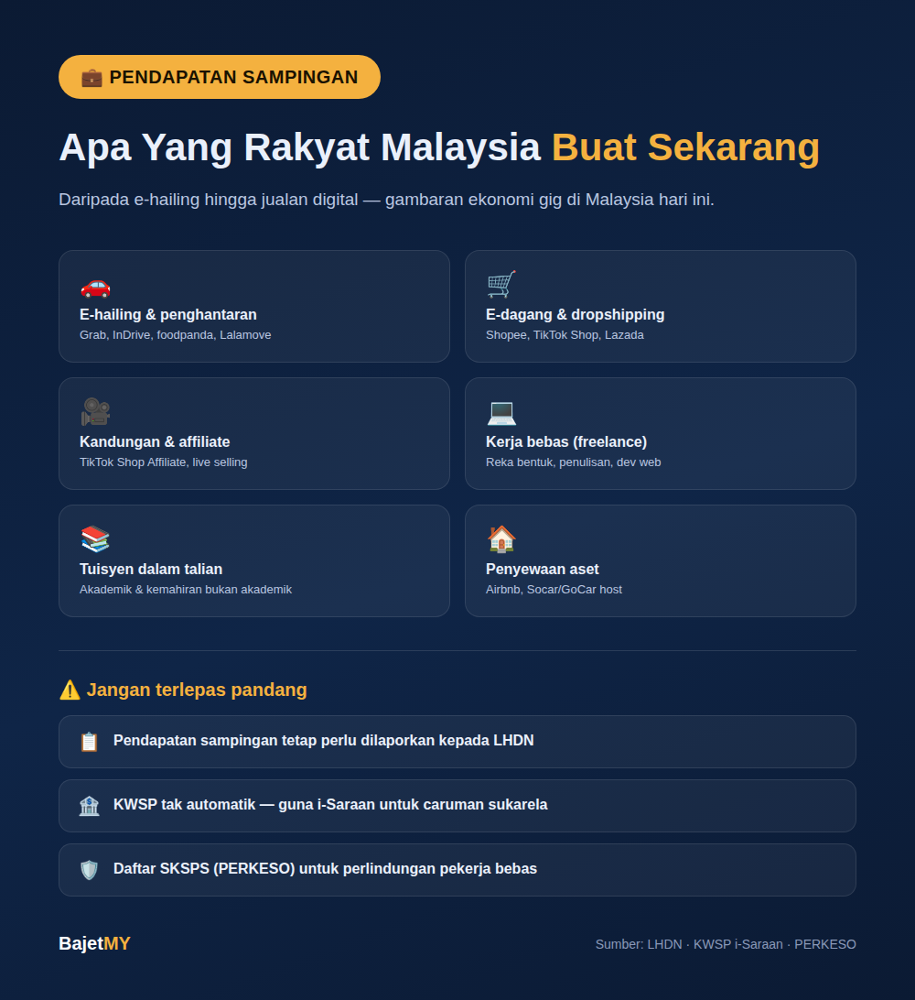

Dengan kos sara hidup yang terus meningkat, semakin ramai rakyat Malaysia mencari sumber pendapatan kedua di luar gaji tetap. Ekonomi gig dan platform digital menjadikan ini lebih mudah berbanding sebelum ini — tetapi ramai juga tertinggal perkara penting seperti cukai dan simpanan persaraan apabila mula berpendapatan sampingan. Berikut ialah gambaran jenis pendapatan sampingan yang popular sekarang, serta perkara yang perlu diambil kira.
Jenis pendapatan sampingan popular
1. E-hailing & penghantaran Grab, InDrive, foodpanda, Lalamove — antara pilihan paling fleksibel kerana boleh mula bila-bila masa tanpa modal besar (selain kenderaan). Sesuai untuk waktu lapang selepas kerja atau hujung minggu.
2. E-dagang & dropshipping Jualan di Shopee, TikTok Shop, dan Lazada membolehkan sesiapa mula berniaga tanpa stok besar melalui model dropship, atau jual produk sendiri (kraf tangan, pakaian, produk niche). Modal permulaan rendah berbanding kedai fizikal.
3. Penciptaan kandungan & affiliate marketing TikTok Shop Affiliate, program affiliate Shopee, dan YouTube Partner Program membolehkan pendapatan daripada komisen jualan atau iklan. Nak tahu berapa agaknya sebuah saluran YouTube boleh jana? Cuba Kalkulator Pendapatan YouTube. Live selling di TikTok juga semakin popular sebagai saluran jualan terus.
4. Kerja bebas (freelance) Platform seperti Fiverr dan Upwork antarabangsa, atau platform tempatan, membuka peluang untuk kemahiran seperti reka bentuk grafik, penulisan, terjemahan, dan pembangunan web — dilakukan sepenuhnya dari rumah mengikut jadual sendiri.
5. Tuisyen dan pengajaran dalam talian Permintaan tinggi untuk tuisyen akademik (SPM, UPSR/PT3 lama, subjek universiti) mahupun kemahiran bukan akademik (bahasa, muzik, seni) — kini banyak dijalankan secara dalam talian merentasi lokasi.
6. Penyewaan aset Menyewakan bilik lapang melalui Airbnb, atau kenderaan melalui platform perkongsian kereta seperti Socar/GoCar (sebagai host), membolehkan aset sedia ada menjana pendapatan tambahan.
7. Perniagaan makanan/kraf berasaskan rumah Jualan kek, kuih, atau produk buatan tangan melalui media sosial dan platform pesanan — kos permulaan rendah dan boleh dimulakan skala kecil sebelum berkembang.
Perkara penting yang ramai terlepas pandang
Cukai pendapatan Semua pendapatan — termasuk pendapatan sampingan/gig — perlu dilaporkan kepada Lembaga Hasil Dalam Negeri (LHDN), walaupun tiada potongan cukai automatik seperti gaji tetap. Simpan rekod pendapatan dan perbelanjaan berkaitan perniagaan sepanjang tahun supaya mudah semasa mengisi borang cukai.
KWSP untuk pekerja bebas — i-Saraan Berbeza dengan pekerja bergaji tetap yang caruman KWSP automatik, pendapatan sampingan/gig tidak termasuk caruman automatik. KWSP menyediakan skim i-Saraan untuk pekerja bebas membuat caruman secara sukarela — penting untuk pastikan simpanan persaraan tidak terjejas hanya kerana beralih kepada kerja fleksibel.
Perlindungan sosial — SKSPS (PERKESO) Skim Keselamatan Sosial Pekerja Sendiri (SKSPS) di bawah PERKESO menyediakan perlindungan (termasuk kemalangan dan hilang upaya) untuk pekerja bebas dan gig — sesuatu yang ramai tidak sedar wujud atau tidak daftar.
Elak anggap semua "peluang pendapatan sampingan" adalah sah Sebahagian tawaran "side income" sebenarnya skim piramid atau skim cepat kaya berselindung di sebalik naratif perniagaan sampingan — terutamanya yang tekankan rekrut ahli baru berbanding jualan produk sebenar. Rujuk artikel kami tentang skim piramid untuk kenali tanda amaran ini.
Cara pilih pendapatan sampingan yang sesuai
- Mula dengan kemahiran/aset sedia ada — lebih mudah bermula tanpa modal besar
- Jangan tinggalkan kerja tetap serta-merta — bina pendapatan sampingan secara konsisten dahulu sebelum pertimbangkan sebagai sumber utama
- Uruskan masa realistik — elak burnout dengan komitmen berlebihan merentasi terlalu banyak platform serentak
- Rekod pendapatan dari hari pertama — memudahkan pelaporan cukai dan pemantauan keuntungan sebenar selepas kos
- Sisihkan sebahagian untuk cukai dan i-Saraan — anggap ini sebahagian kos operasi, bukan lebihan pilihan
Ringkasan
Pendapatan sampingan di Malaysia kini merangkumi pelbagai bentuk — daripada e-hailing dan e-dagang, sehingga kerja bebas dan penyewaan aset. Kunci untuk jadikan ia mampan: pilih berdasarkan kemahiran/aset sedia ada, urus masa dengan realistik, dan jangan abaikan tanggungjawab cukai serta simpanan persaraan (i-Saraan) hanya kerana ia bukan kerja "rasmi" bergaji tetap.
Sumber
- Lembaga Hasil Dalam Negeri Malaysia (LHDN) — keperluan pelaporan pendapatan
- KWSP — Skim i-Saraan untuk pekerja bebas
- PERKESO — Skim Keselamatan Sosial Pekerja Sendiri (SKSPS)